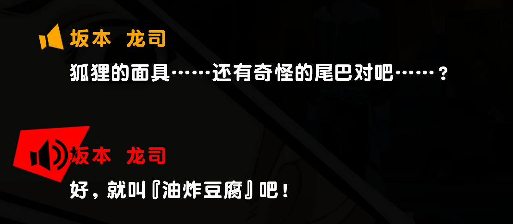

选自群聊内容，觉得比较有趣所以摘抄到这里。
牛马感也是都市生活不可不品的一环。
油炸豆腐 2024/9/23 19:43:15
下班这条街好炫酷啊
油炸豆腐 2024/9/23 19:43:22
还有地上地铁
油炸豆腐 2024/9/23 19:44:39
（图片）
油炸豆腐 2024/9/23 19:44:44
拍不出来那种味
油炸豆腐 2024/9/23 19:44:55
有种都市的空间感
油炸豆腐 2024/9/23 19:56:56
（《幽灵东京》歌词截图）
油炸豆腐 2024/9/23 19:57:03
最代入的一集
油炸豆腐 2024/9/23 19:57:29
幽灵儿摆京儿
油炸豆腐 2024/9/23 20:24:33
我之前实习也天天去徐汇的
油炸豆腐 2024/9/23 20:24:46
主要地上地铁比较有味
油炸豆腐 2024/9/23 20:25:55
上海比较有感觉的是徐家汇地铁站
油炸豆腐 2024/9/23 20:26:51
我现在看p5也像徐家汇
油炸豆腐 2024/9/23 20:27:10
各式各样的人从各种方向穿梭过来 到各种地方去
油炸豆腐 2024/9/23 20:27:19
忙碌而又与我正交 真好啊
油炸豆腐 2024/9/23 20:28:35
而我也不过是这千千万万地铁上戴着耳机手握吊环的牛马中的一员罢了
PS：油炸豆腐是我这时的群名片。出处：
